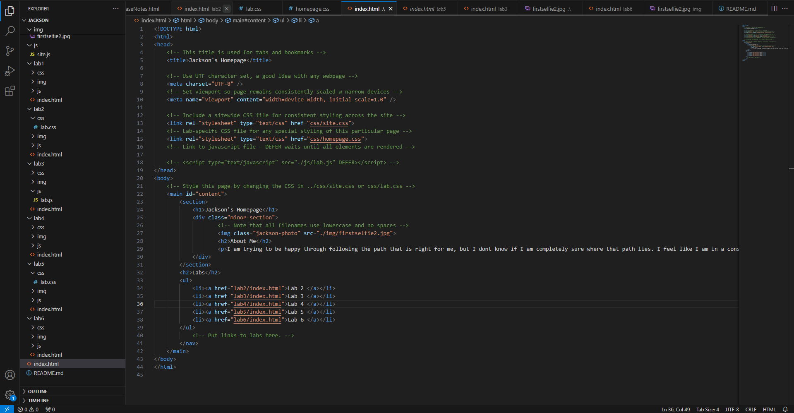
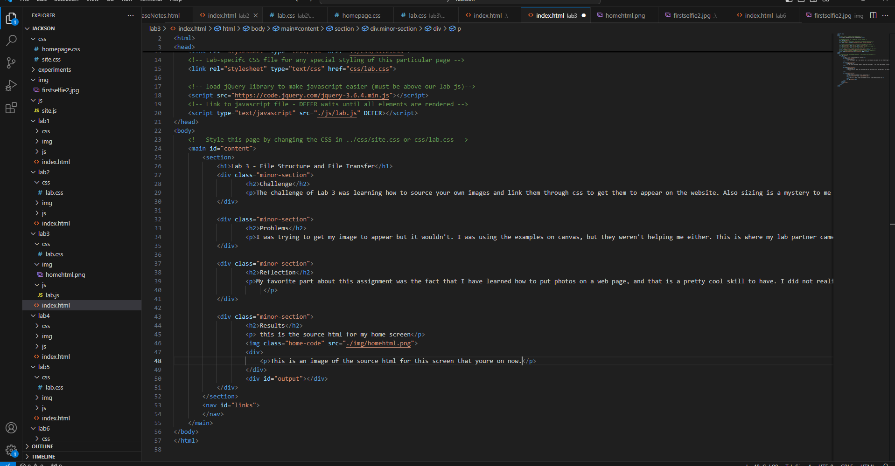

Lab 3 - File Structure and File Transfer
Challenge
The challenge of Lab 3 was learning how to source your own images and link them through css to get them to appear on the website. Also sizing is a mystery to me and I messed around with it but I really don't know how it worked out. Hopefully the image will show up nicely on this page at the bottom.
Problems
I was trying to get my image to appear but it wouldn't. I was using the examples on canvas, but they weren't helping me either. This is where my lab partner came in handy because I could look at their code, and spot the difference in what was missing or interfering with the image. I soon found out that I wasn't putting the right title of the image in HTML, and then it was all smooth from there.
Reflection
My favorite part about this assignment was the fact that I have learned how to put photos on a web page, and that is a pretty cool skill to have. I did not realize how tetious it could be to link an image accross source code, and it still feels like a mystery. The complexity of everything that I am learning feels so great, and I truly feel like I could come to understand a world I never even dreamed of understanding.
Results
this is the source html for my home screen
This is an image of the source html for this screen that you're on now.
